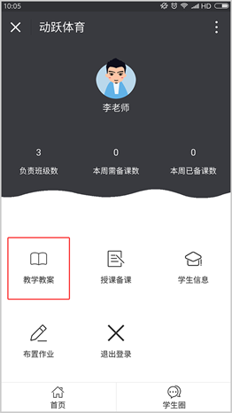
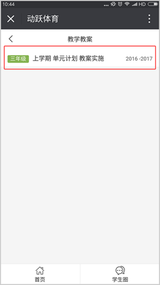
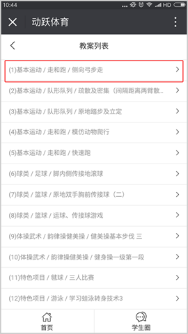
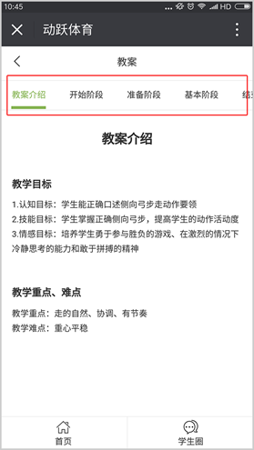

<div class="title">如何查看教学教案</div>

<div class="on">视频教程：</div>
<div class="youkuplayer" ykVid="XMzU5MjUyMTA3Mg"></div>

<div class="on">1. 进入教师端页面，点击【教学教案】，进入教学教案页面，点击已发布的单元计划</div>



<div class="on">2. 进入后，显示单元计划的教案列表，点击想要查看使用的教案。</div>

<div class="on">3. 点击进入后，查看教案详细内容，页面最上方的导航栏，可直接点击到想要了解的教案内容位置。</div>


<script id="_youkujs_" type="text/javascript" src="//player.youku.com/jsapi"></script>
<script type="text/javascript" src="../statics/js/each/helpvideo.js"></script>